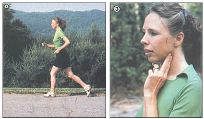
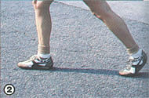

I decided to give up running at 3:00 a.m. one typically sleepless summer night after a particularly grueling road race. No longer - I vowed, head buried in the pillow and muscles still bunched and aching - would I punish my body in that manner.
Following that resolution, I did a bit of research and found that I wasn't alone. Apparently, some nine out of ten people who begin a running exercise program drop out within a year. Unfortunately - along with giving up the sport - many also abandon hope of losing weight, staying in shape, or improving their cardiovascular performance. However, there's no need to relinquish the dream of "fitness forever" just because running isn't for you. There's a safe, effective, and enjoyable alternative to jogging: walking!
IDEAL EXERCISE
Almost anyone - from toddler to great-grandparent - can improve his or her health with a walking program. After all, this basic exercise is generally recommended for coronary patients and is often the first activity suggested for those who've experienced surgery or childbirth.
Furthermore - while doctors often have varying opinions about the benefits and long-term effects of jogging and running - there is universal agreement on the positive results of walking.
Better yet, you'll begin to feel physical progress after only six to eight weeks of a "shank's mare" program. You can expect to lose weight, improve the muscle tone throughout your body, experience lowered blood pressure, enjoy better rest, and benefit from an overall sense of well-being . . . a feeling that you can bet you'll never gain by riding an armchair toward the eleven o'clock news!
Of course, walking isn't just physically beneficial, either. It's good for the mind and soul as well. As Henry David Thoreau - a daily walker - wrote, "It is a great art to saunter."
WISE WALKWEAR
The single most important investment a walker can make is in quality shoes. Go to a retail outlet that specializes in sports footwear and get properly fitted with a reputable brand . . . rather than take a chance on discount store offerings. And since many people have one foot that's slightly larger than the other, be sure to try both shoes on. Wear well-cushioned cotton - or cotton-and-wool blend - socks when trying on shoes, too, because they're strongly recommended for folks engaged in "serious" walking.
In most areas and seasons, running shoes made with nylon mesh and suede or split leather will offer the best combination of ventilation and support. Avoid those with long studs or "waffles" on the soles, though . . . they'll tend to scuff and catch on small obstructions. Be sure, too, to select a shoe that has a generous heel wedge, to avoid overstretching the Achilles' tendon while walking briskly.
Finally, remember that your shoes should feel perfect when you don them in the store. Don't count on stretching or "breaking in" to alter the fit . . . more than likely it's your foot that'll become painfully altered in such a process! Athletic shoes generally come in standard widths, so simply buy yours a halfsize larger if the pair you first try on feels narrow.
Stand up in your prospective walkers . . . there should be a thumbnail's distance between your longest toe and the very end of the shoe. Stroll around a bit, keeping in mind that footwear shouldn't slip on your heel as you move. When you've found a good pair of shoes, your feet will know it. Trust them.
FROM THE ANKLES UP
There aren't any rules governing what you wear above your shoes and socks (indeed, that nontrendiness is one of the nicer aspects of this sport), but since you will be moving briskly, lightweight apparel is recommended. Shorts are probably the most comfortable choice from spring through fall . . . and don't worry about the looks of your legs: Walking will soon have them in top condition!
In cool or foul weather, wear clothing in layers, placing cotton or wool next to the skin (they're the most absorbent) and progressing outward to rain-repellent nylon as the day requires. Thus a typical walking outfit might consist of jeans or shorts, a T-shirt, a sweat shirt, a nylon windbreaker, a pair of gloves, and a cap. The outer layers can then be removed in stages as your body (and/or the weather) warms up.
It's also important to wear reasonably light and loose-fitting clothes. Such garments will allow you plenty of movement . . . and help promote the evaporation of perspiration.
WALK THIS WAY
If you're like most folks, you probably haven't ever given much thought to how you walk, even though a person's stride is nearly as unique as his or her fingerprints or voice. (Most people can easily identify the sound of their loved ones' footsteps.)
Many individual mannerisms, however, aren't appropriate to brisk, recreational walking. For example, notice how you plant your feet. Do they turn out or in drastically? If so, try marching along a painted line in a parking lot, placing your feet parallel to the stripe on either side and pushing off from the ball of the big toe with each step. Or put one foot in front of the other right on the line (it sometimes helps to pretend that you're walking a tightrope). This sort of practice will help you develop an efficient gait . . . similar to that used in Olympic competition by race walkers.
Learn to swing your arms rhythmically as you go, holding your forearms at an angle of 90° to your upper arms. Walking is an exercise that involves the whole body, and good arm action is one key to obtaining overall fitness benefits and achieving a stronger stride, as well. Once you gain in strength and ability, practice locking your knee as the heel begins to make contact with the ground. You should feel as though you're pulling the earth toward you, holding each knee locked as it passes under the body.
A serious walker, obviously, won't ever be mistaken for someone aimlessly strolling down the block, but don't let that embarrass or inhibit you. After all, you should look like a person who is intentionally exercising. If anyone stares, just smile and wave!
DETERMINING PACE AND DISTANCE
It's very important, if you've been living a relatively inactive life, to get approval from your doctor before beginning any physical fitness endeavor. Then, once you start a walking program, you'll want to work your heart rate up to 75% of its maximum capacity for 20 to 30 minutes at a stretch - and do so several times a week - in order to reap the full value of the activity. When you're able to accomplish that, you'll experience aerobic benefits (that is, a conditioning of the heart and lungs) and begin to burn the fat cells stored in your body.
Most physiologists agree that the "target rate" - that is, the heartbeat you ought to achieve at regular intervals to best develop cardiovascular fitness - should be a percentage of the number 220 minus your age . . . and that a 70 to 80% effort is right for most folks.
As an example, let's suppose that you're 60 years old (and reasonably healthy, of course). Then 220 minus 60 equals 160 . . . 160 times 0.70 equals 112 beats per minute. . . and 160 times 0.80 equals 128 BPM. Thus, your safe target rate would range from 112 to 128 heartbeats per minute. To determine whether you're achieving your goal, you'll need to monitor your pulse periodically while exercising. Beginning walkers might even want to take a reading every five minutes or so, and adjust the pace - or pause to rest - as required.
The easiest way to read a pulse, as you may already know, is to place your first two fingers under one side of your jaw. When you can feel the pulse, count the beats for a sweep of six seconds on your watch. Then add a zero to your count, and you've got your heart rate.
A STEP-BY-STEP APPROACH
When you're starting your new program, you might benefit from reading The Complete Book of Walking by Charles T. Kuntzleman and the editors of Consumer Guide (Simon & Schuster, 1980). The authors recommend that walkers operate on a time - rather than distance - basis, and they go on to outline a program that starts with 20 minutes and works up to a maximum of two hours, several times a week.
Many folks will find themselves traveling at a rate of about 30 minutes a mile at first, but even if you're unaccustomed to strenuous activity, you can gradually achieve 20and 15minute miles-or three to four miles per houras your conditioning progresses . . . so plan your time accordingly. (You may want to premeasure a course, by driving over it in your car, in order to record and evaluate your initial performance and later improvements.)
Of course, it's best to start out covering short distances - perhaps as little as a half-or quarter-mile - and allow your muscles to adapt to the new stresses being put upon them. The Complete Book of Walking cautions beginners on three points: You should not walk so vigorously that you can't carry on a conversation, or whistle, as you go . . . you should feel no pain . . . and you should experience no great fatigue (that is, find yourself excessively tired during the remainder of the day following your walk). If your body disagrees with even one of these statements, you're simply going at it too hard for your present level of conditioning.
A reasonable goal, after six to eight weeks, would be to travel a full two miles in 40 minutes. Then you might aim, after 16 weeks of regular exercise, to accomplish three miles in 48 to 60 minutes. From that point on you'll be in good condition and should be enjoying your outings.
ADDING ON
If you use common sense from the start, chances are good that you'll soon become enthusiastic about the sport. You may even decide to organize your friends and neighbors into a walking club or to take up supplemental activities such as hiking, backpacking, or bicycling. In fact, after a while you may even decide to try jogging. If so, fine . . . at the very least, your walking experience will greatly improve the possibility of long-term running success!
|
 STAFF PHOTOS Good walking form is the key to maximum fitness benefit. Notice the arm position, which helps achieve a stronger stride. . . Place two fingers underneath the jaws to locate and count your pulse. |
 STAFF PHOTOS Try to push off the ball of the big toe with each step. |
|